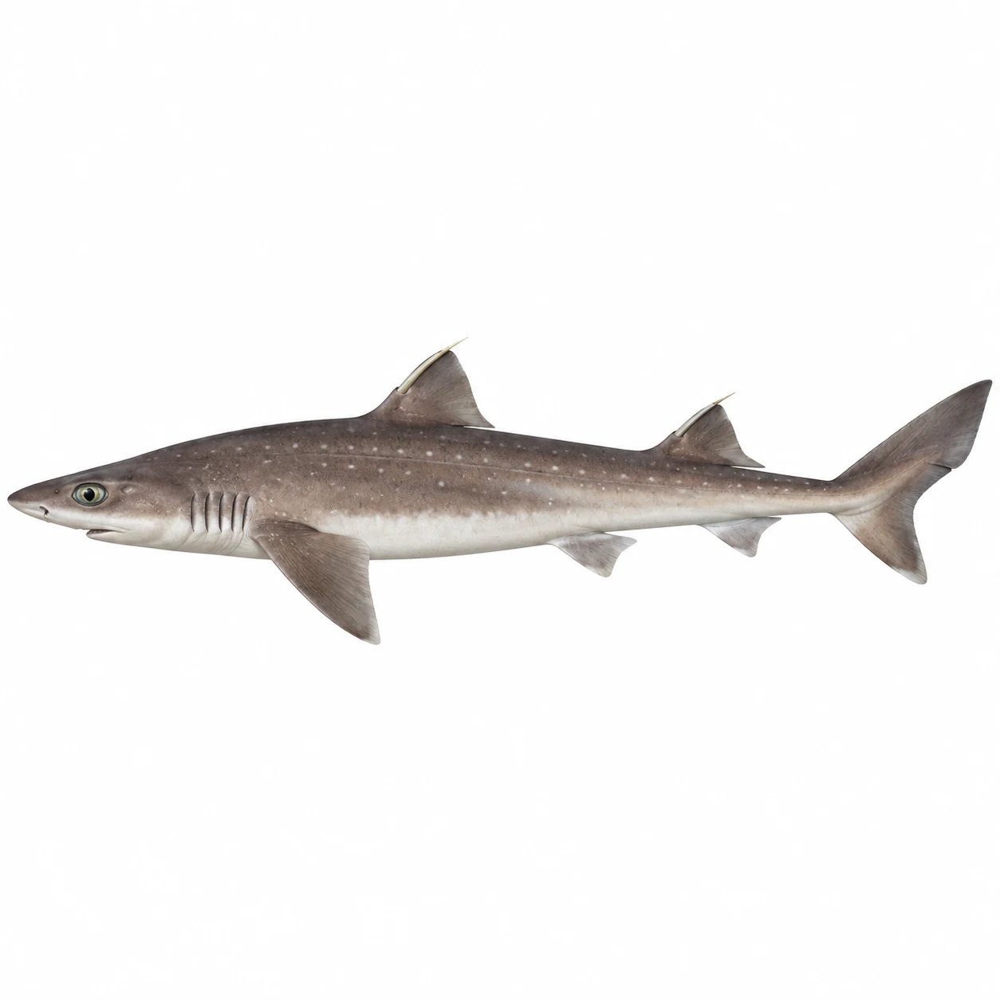
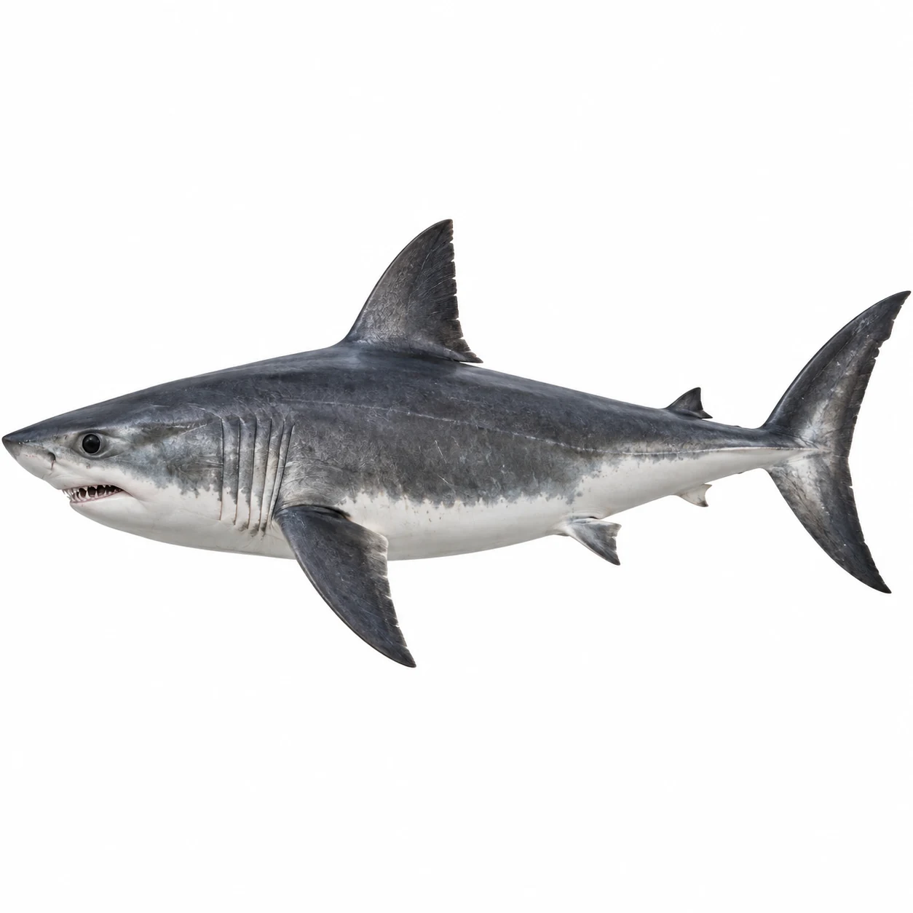
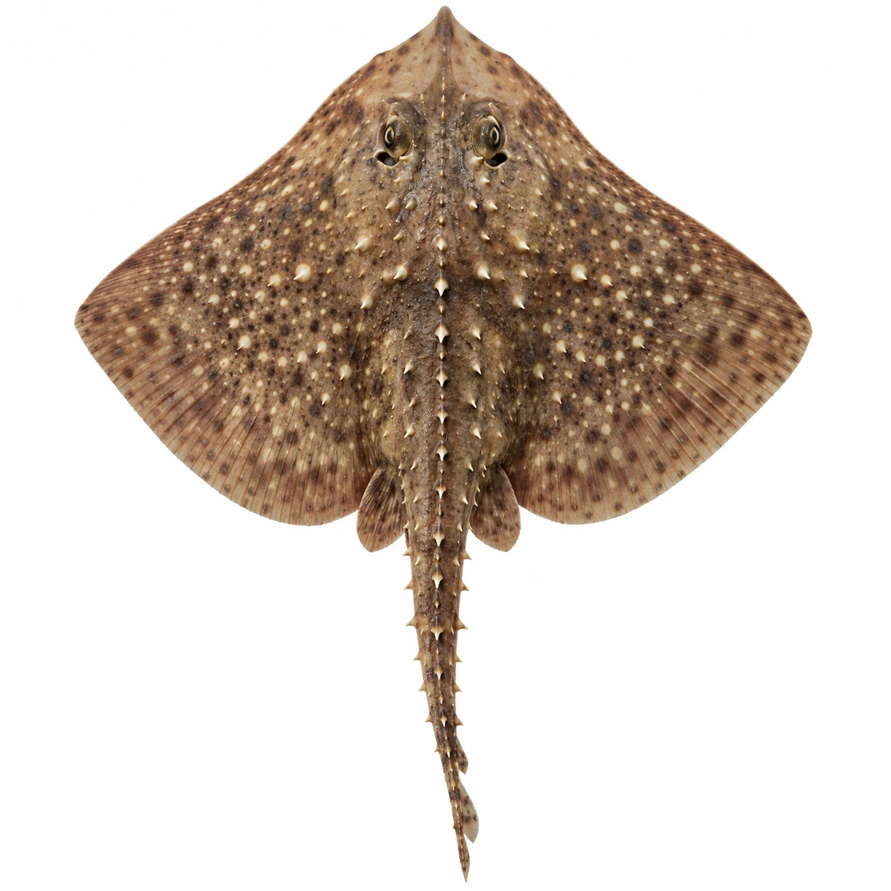
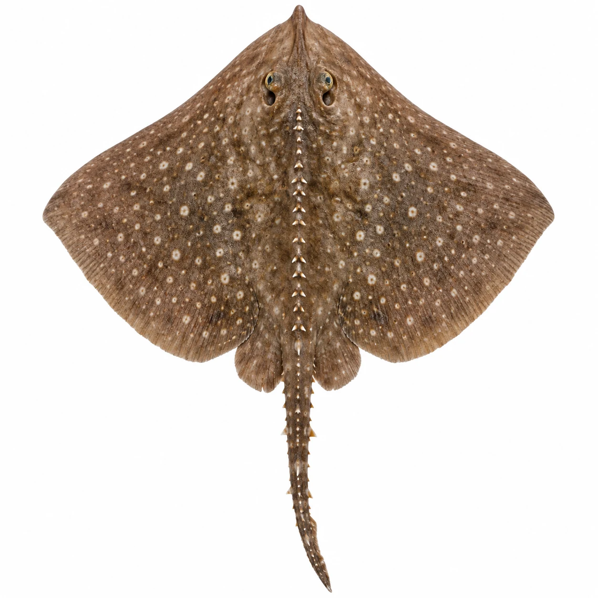
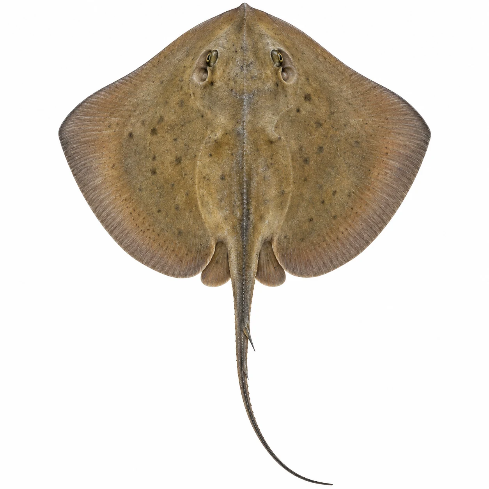

PetriHeil · Fünf neue Hai- und Rochenbilder
Version 2.0.10 · KI-Illustrationen – keine fachlich geprüften Bestimmungsfotos.





Version 2.0.10 · KI-Illustrationen – keine fachlich geprüften Bestimmungsfotos.




